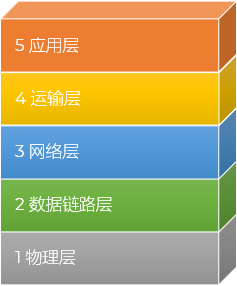
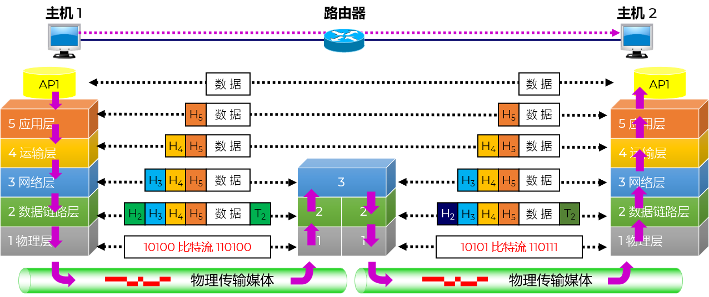

体系结构
@Architect- 概述 Overview
- 计算机网络体系结构是指计算机网络层次结构模型和各层协议的集合；也称为 协议集 Protocol Set 或 协议栈 Protocol Stack
- 计算机网络采用 层次化 Hierarchy 设计方法，把通信过程划分为多个层次，并为每个层次设计一个单独的协议，这些协议通过分层结构进行组织
- 每层通过 特定 Specific 的协议完成一种功能
- 多层叠加完成整个信息的发送和接收过程
- 最著名的网络体系结构是 OSI 参考模型和 TCP/IP 协议
- 分层原则 Rules
- 各层之间是相互独立的
- 每一层需要有足够的灵活性
- 各层之间完全 解耦 De-coupling
- 分层优点 Features
- 高层不需要知道低层是如何实现的，只需要知道低层所提供的服务，以及本层向上提供的服务，各层独立性强
- 当任何一层发生变化时，只要层间 接口 Interface 不发生变化，那么这种变化就不会影响到其他的层，适应性强
- 整个系统分解为若干易于处理的部分，这种结构使得一个庞大而又复杂的系统实现和维护起来更容易
- 每层的功能与所提供的服务都有精确的定义和说明，有利于促进标准化
经典的计算机科学设计哲学——分治法（Divide and Conquer）
开放系统互连参考模型 OSI/RM
- Open System Interconnection Reference Model
- 定义网络互联的 7 层框架
- 实现系统间的互联性、互操作性和可移植性
- 开放：遵循 OSI 标准的任何系统之间均可通信
- 系统：各系统中与互联有关的部分
- 设计缺陷
- 过于理想化，无法实现
- 先于网络产生，不符合网络实际发展
- 每一层之间划分过于绝对，复杂，过度追求完美

开放是有条件的
一个为了让世界上任何不同的计算机系统，只要遵循统一标准，就能实现互相连接和通信的参考模型
从外交策略，理解开放 Open
TCP/IP 四层协议体系结构
- TCP/IP 四层模型是现代互联网的核心协议栈，它因注重实用而将功能相近的层次合并
- TCP/IP 四层模型是互联网实际运行的“事实标准”
- 互联网就是基于 TCP/IP 协议栈运行的
- 应用层 Application Layer
- 直接为用户提供网络服务，例如网页浏览（HTTP）、文件传输（FTP）和域名解析（DNS）
- 负责生成需要传输的用户数据
- 运输层 Transportation Layer
- 负责为两台主机上的应用程序提供端到端的通信服务
- 主要包含 TCP（可靠传输，保证数据完整到达）和 UDP（不可靠但效率高，用于实时音视频）两种协议
- 网际层 Network Layer
- 核心层：也叫互联网络层，核心是 IP 协议
- 主要作用是路由寻址，即在复杂的网络中找到一条通往目标主机的最佳路径
- 网络接口层 Network Interface Layer
- TCP/IP 模型中最底层
- 负责将数据帧通过物理网络（如以太网、Wi-Fi）发送出去
- 未定义具体协议，而是说“底层只要是能传输数据的网络都可以”

TCP/IP 五层协议体系结构
- 弥补了 TCP/IP 四层模型“底层定义模糊”的缺陷而提出的教学模型
- 综合了 OSI 的严谨和 TCP/IP 的实用
- 更接近 OSI 七层模型的严谨性
- 把 TCP/IP 的“网络接口层”拆分为“物理层”和“数据链路层”
- 方便讲解局域网原理，同时也保留了 TCP/IP 的精髓
- 应用层 Application Layer
- 任务：通过应用进程间的交互来完成特定网络应用
- 协议：定义的是应用进程间通信和交互的规则
- 数据：PDU 为 报文 Message、数据 Data
- Telnet - 远程登陆；基于TCP
- HTTP - Hypertext Transfer Protocol，超文本传输协议；基于TCP
- HTTPS - Hypertext Transfer Protocol Secure，安全的超文本传输协议；基于TCP
- FTP - File Transfer Protocol，文件传输协议；基于TCP
- SMTP - Simple Mail Transfer Protocol，简单邮件传输协议，一种用于发送电子邮件的协议。它定义了电子邮件的传输方式，负责将邮件从发件人的电子邮件服务器发送到接收人的电子邮件服务器。SMTP负责处理邮件的路由和传输，确保邮件能够准确地传递到目标服务器 ；基于TCP
- POP3 - Post Office Protocol 3，用于接收电子邮件的协议。它允许用户从邮件服务器上下载和接收邮件，如Outlook；基于TCP
- DNS - Domain Name System，域名系统
- DHCP - Dynamic Host Configuration Protocol，动态主机分配协议
- SNMP - Simple Network Management Protocol，简单网络管理协议；一种用于网络管理的应用层协议。它允许网络管理员监视和管理网络设备、服务器、路由器和其他网络设备的运行状态和性能；基于UDP协议
- RIP - Routing Information Protocol，路由信息协议，主要的路由协议之一；基于UDP协议
- 运输层 Transportation Layer
- 任务：负责向两台主机中进程之间的通信提供通用的数据传输服务；具有复用和分用的功能
- PDU 为 数据段/报文段 Segment
- 主要使用两种协议：
传输控制协议 TCP(Transmission Control Protocol)，提供面向连接的、可靠的数据传输服务
用户数据报协议 UDP (User Datagram Protocol)：提供无连接的尽最大努力 (best-effort) 的数据传输服务；不保证数据传输的可靠性；数据单元称为 用户数据报 Packet
- TCP - Transmission Control Protocol，传输控制协议；面向连接，可靠
- UDP - User Datagram Protocol，用户数据报协议；无连接、最大努力交付；直播流
- 网络层 Network Layer
- 使用IP 协议(Internet Protocol)和其它协议为分组交换网上的不同主机提供通信服务
- IP 协议分组也叫做 IP 数据报，或简称为 数据报 Packet
- PDU 为 数据报 Datagram、分组 Packet
- 核心设备：路由器
- 两个具体任务：
路由选择：通过一定的算法，在互联网中的每一个路由器上，生成一个用来转发分组的转发表
转发：每一个路由器在接收到一个分组时，要依据转发表中指明的路径把分组转发到下一个路由器
- IP - Internet Protocol，互联网协议
- ARP - Address Resolution Protocol，地址解析协议
- RARP - Reverse Address Resolution Protocol，逆地址解析协议
- ICMP - Internet Control Message Protocol，Internet控制报文协议
- IGMP - Internet Group Management Protocol，Internet组管理协议
- OSPF - Open Shortest Path First，开放的最短路径优先协议，基于IP协议，主要的路由协议之一
- 数据链路层 Data Link Layer
- 任务：实现两个相邻节点之间的可靠通信
- 在两个相邻节点间的链路上传送帧
- PDU 为 帧 Frame
- 如发现有差错，就简单地丢弃出错帧
- 如果需要改正出现的差错，就要采用可靠传输协议来纠正出现的差错。这种方法会使数据链路层协议复杂
- PPP - Point-to-Point Protocol，点对点协议
- 核心设备：交换机
- 物理层 Physical Layer
- 任务：实现比特 0、1的传输
- PDU 为 比特 Bit
- 确定连接电缆的插头应当有多少根引脚，以及各引脚应如何连接
- 注意：传递信息所利用的一些物理媒体，如双绞线、同轴电缆、光缆、无线信道等，并不在物理层协议之内，而是在物理层协议的下面
- 核心设备：集线器、中继器

四层：实干家；它指导了互联网的硬件和软件设计
五层：解说员；它帮我们拆解了四层中黑盒子般的底层细节
两者并不矛盾，本质是同一套协议栈在不同维度上的呈现
网络协议 (Network Protocol)
为进行网络中的数据交换而建立的规则、标准或约定
网络协议是计算机网络的不可缺少的组成部分
三个组成要素：
1. 语法 Syntax：数据与控制信息的结构或格式；长什么样
2. 语义 Semantics：需要发出何种控制信息，完成何种动作以及做出何种响应；什么意思
3. 同步 Synchronization：事件实现顺序的详细说明；怎么配合
F12 查看浏览器的请求和响应
协议数据单元 PDU (Protocol Data Unit)
每层协议规定的数据传输单位
| Layer | PDU | Protocol |
|---|---|---|
| Application Layer | Message/Data | HTTP/HTTPS SMTP FTP DNS RIP POP3 SNMP Telnet |
| Transportation Layer | Segment | TCP UDP |
| Network Layer | Datagram/Packet | IP IGMP ICMP OSPF BGP |
| Data Link Layer | Frame | ARP PPP Ethernet |
| Physical Layer | Bit | RJ45接口、光纤、集线器、电压等规范 |
数据流 Data flow
- 对等层通信 Peer To peer
- 任何两个同样的层次数据单元加上控制信息通过水平虚线直接传递给对方
- 各层协议实际上就是在各个对等层之间传递数据时的各项规定

信号的交付：找到目标网络 → 找到目标主机 → 交付给目标应用进程